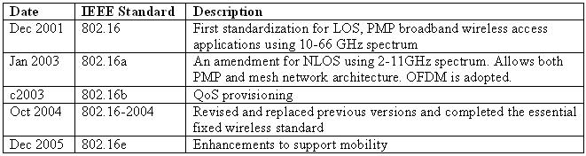

HISTORY
 IEEE's roots go back to 1884 when electricity began to become a major influence in society.
There was one
IEEE's roots go back to 1884 when electricity began to become a major influence in society.
There was one
major established electrical industry, the telegraph,
which since the 1840s had come
to connect the world with a
data communications system faster than the speed
of transportation.
The telephone and electric power and light industries had just gotten underway
.
